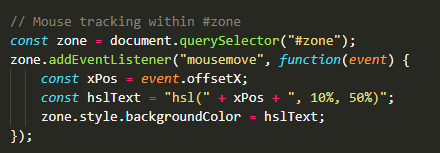

Zone Disco
Une petite fonction JavaScript récupère actuellement la position de la souris et fait varier la couleur de l'arrière-plan.
Dans l'espace identifié #zone, on écoute l'évènement pointeur mousemove avec un addEventListener().
Une fonction anonyme récupère la valeur du pointeur en x dans cet event , et adapte la couleur HSL du background.
